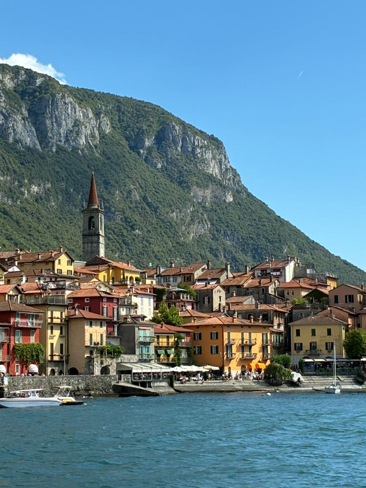
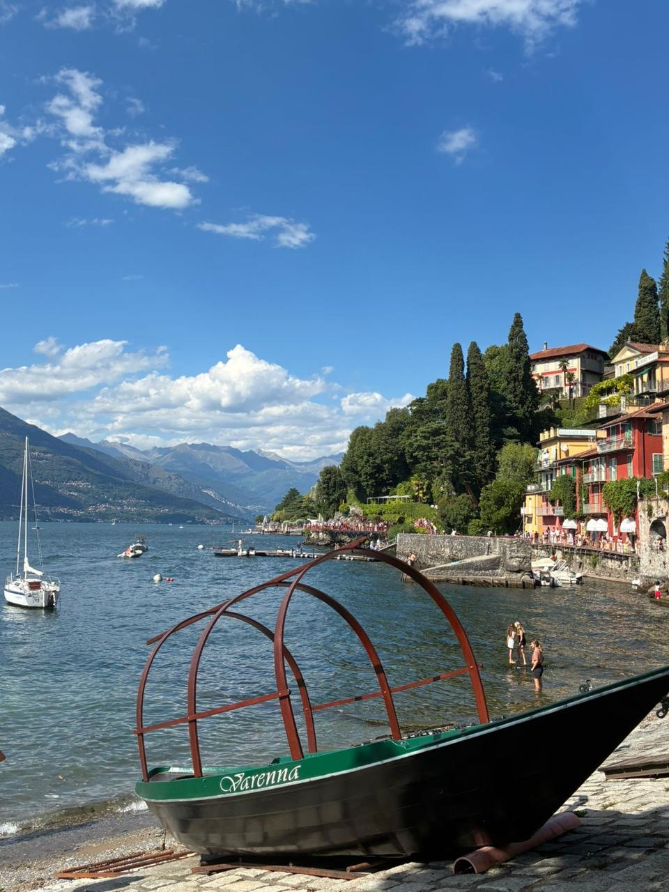
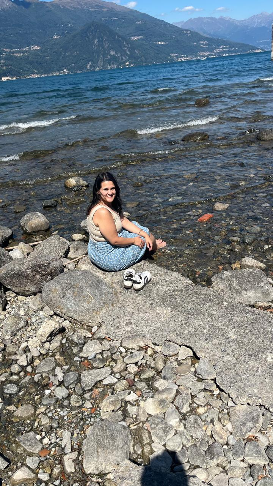
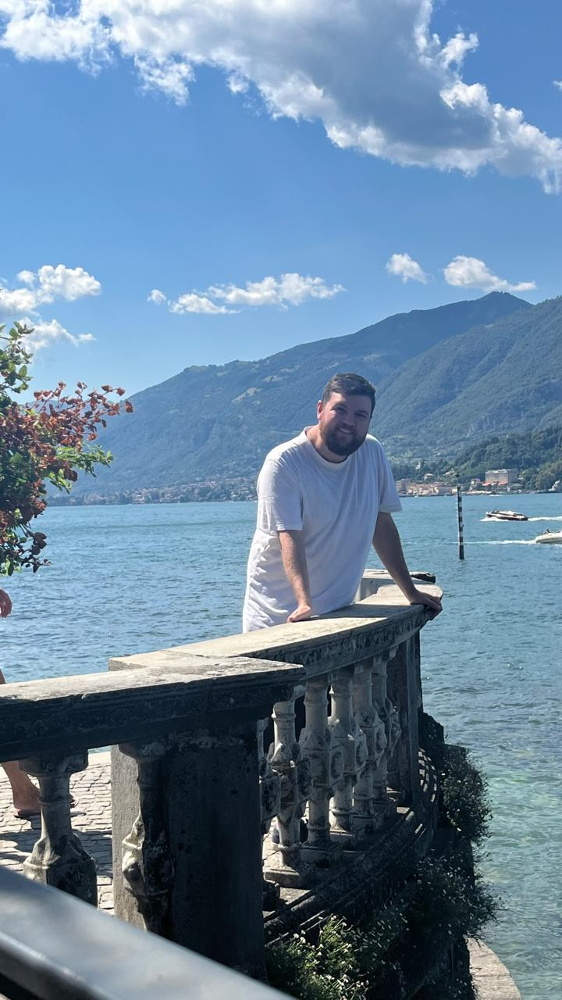
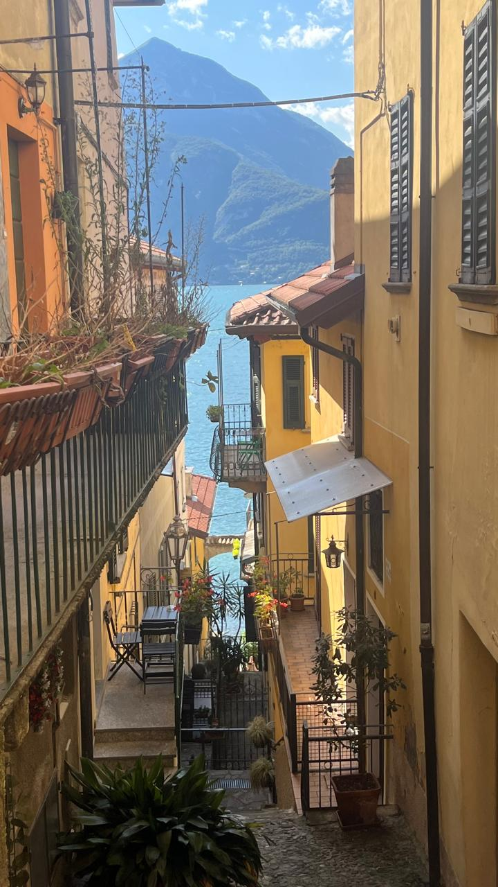
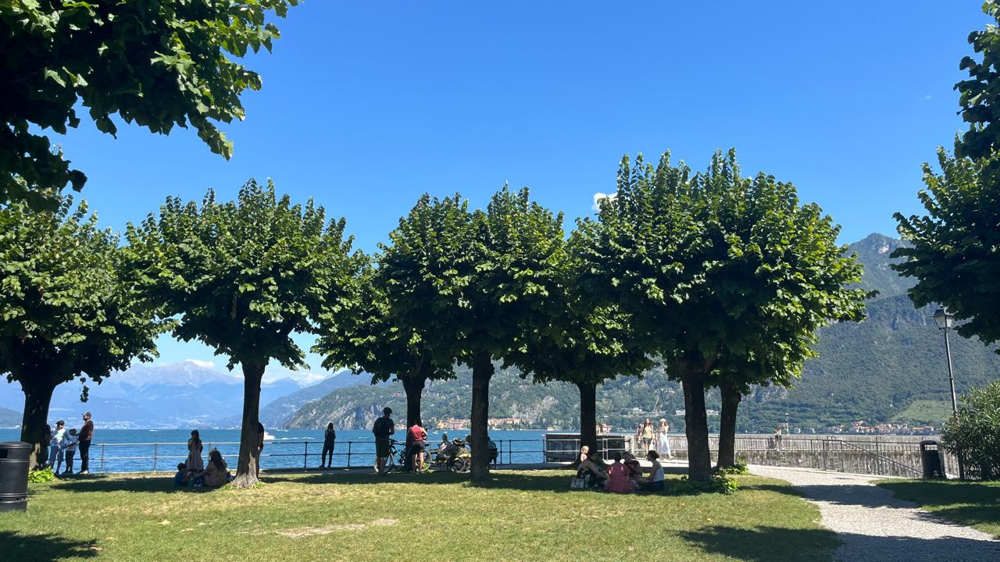
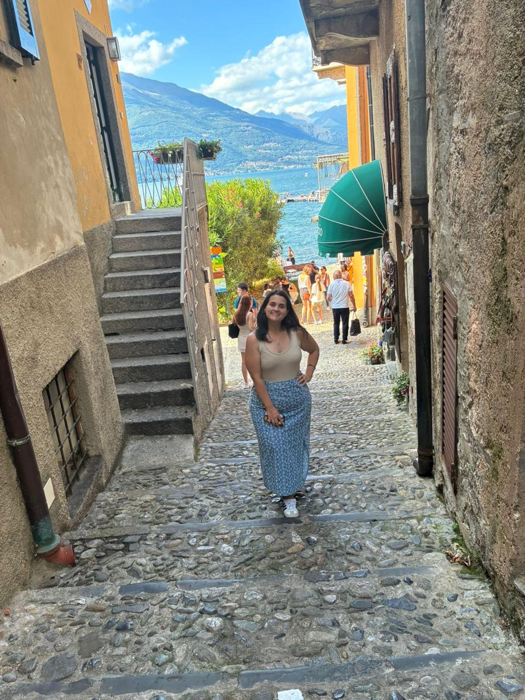
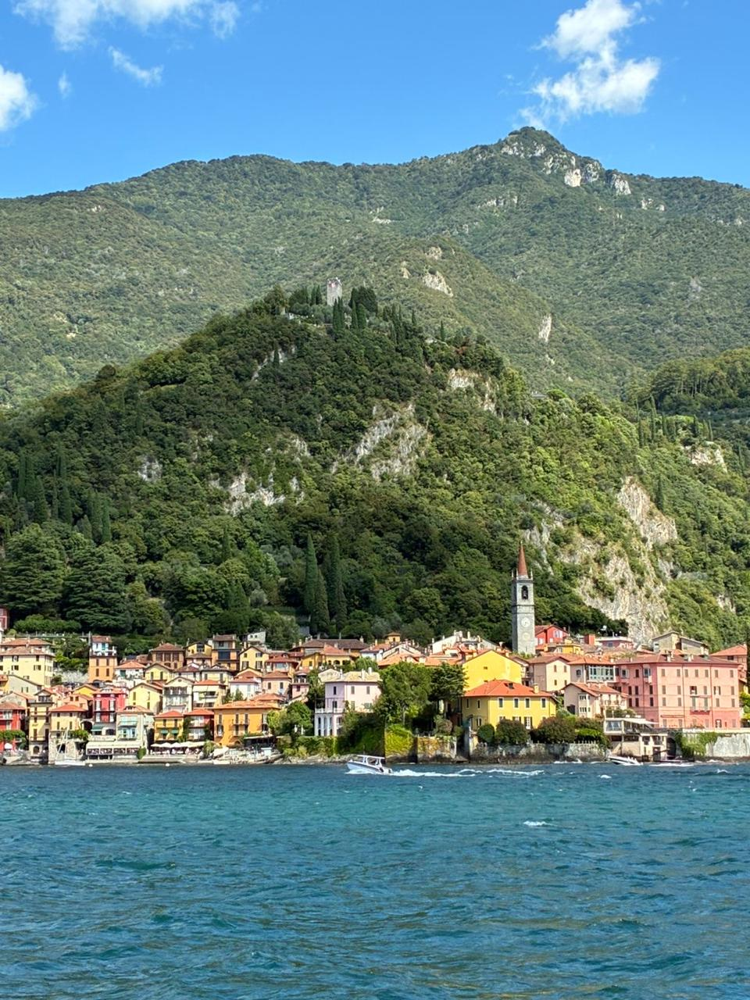

Lago de Como
O lago de Como é muito grande e possui várias cidades em suas margens. Aqui falaremos das principais cidades desse lago encantador.








Lecco
Lecco é uma cidade à beira do Lago de Como, cercada por montanhas dramáticas como o Resegone e conectada a trilhas, mirantes e vilas vizinhas. É um destino perfeito para quem busca natureza, vistas cinematográficas e um clima mais autêntico do que as cidades mais turísticas do lago.
Milão → Lecco
Saindo de Gorla, pegue a linha vermelha (M1) até Loreto. Lá, faça a baldeação para a linha verde (M2) e siga até a estação Centrale.
Na Estação Central de Milão, compre seu bilhete de trem para Lecco.
A viagem dura cerca de 40 minutos e custa em torno de 4 a 6 euros por trecho.
Ao chegar, você já estará praticamente no centro — o lago fica a poucos minutos de caminhada da estação.
Pontos Turísticos Imperdíveis
- Lungolago di Lecco: Passeio à beira do lago com vista para as montanhas, perfeito para fotos e para sentir o clima da cidade.
- Ponte Azzone Visconti: Ponte histórica que conecta Lecco a Malgrate, especialmente bonita ao pôr do sol.
- Piani d’Erna: Teleférico que leva a um mirante com vistas impressionantes do lago e das montanhas.
- Monte Resegone: Montanha icônica da região, famosa por suas “pontas serradas”.
- Centro Storico: Ruas charmosas, cafés e a Piazza XX Settembre.
- Museo Manzoniano: Dedicado ao escritor Alessandro Manzoni, que viveu na cidade.
- Lungolago di Malgrate: Do outro lado da ponte, um dos passeios mais bonitos do lago.
Gastronomia em Lecco
- Missoltini: Peixe do lago seco e grelhado, para quem gosta de sabores locais.
- Polenta uncia: Cremosa com queijo e manteiga.
- Risotto al pesce persico: Clássico do Lago de Como.
Sorvete 🍦: A Gelateria Capo Horn é a mais tradicional do centro, perfeita para um gelato pós-lago.
Dica dos Ussinhos 🐻💡
Lecco é uma excelente base para explorar o Lago de Como com mais tranquilidade. Se você quer natureza, trilhas e vistas, Lecco entrega mais do que Bellagio — e com muito menos turistas.
Mapa dos Ussinhos 🐻💡
Varenna
Essas três cidades formam o triângulo mais fotogênico do Lago de Como. Cada uma tem sua personalidade: Varenna é romântica e tranquila, Bellagio é elegante e movimentada, e Menaggio é ensolarada e perfeita para caminhadas à beira do lago.
Milão → Varenna
Saindo de Gorla, pegue a linha vermelha (M1) até Loreto. Lá, faça a baldeação para a linha verde (M2) e siga até a estação Centrale.
Na Estação Central de Milão, compre seu bilhete de trem para Varenna-Esino.
A viagem dura cerca de 1h e custa entre 4 e 7 euros.
A estação fica a poucos minutos do lago.
Traghetto (Ferry)
O grande charme dessa região é circular entre as cidades pelo lago:
- Varenna ⇄ Bellagio (o mais rápido e frequente)
- Bellagio ⇄ Menaggio
- Menaggio ⇄ Varenna
- Bellagio ⇄ Tremezzo (para visitar a Villa Carlotta)
- Bellagio ⇄ Cadenabbia
Os bilhetes custam entre 4 e 6 euros por trecho.
Pontos Turísticos Imperdíveis
Varenna
- Villa Monastero: Jardins à beira do lago, um dos cenários mais bonitos da região.
- Castello di Vezio: Castelo medieval com vistas panorâmicas.
- Passeggiata degli Innamorati: Caminhada romântica ao longo do lago.
Bellagio
- Villa Melzi: Jardins elegantes e paisagens cinematográficas.
- Punta Spartivento: Melhor vista do Lago de Como.
- Salita Serbelloni: Viela fotogênica com lojas e cafés.
Menaggio
- Lungolago di Menaggio: Passeio amplo e ensolarado.
- Lido di Menaggio: Área para banho e relaxamento.
Gastronomia no Triângulo do Lago
- Pasta al lavarello (peixe do lago)
- Polenta e brasato
- Risotto al pesce persico
Sorvete 🍦:
- Gelateria Riva (Menaggio)
- Gelateria del Borgo (Bellagio)
Dica dos Ussinhos 🐻💡
Se você tiver pouco tempo, faça o “triângulo clássico”: Varenna → Bellagio → Menaggio → Varenna. É o roteiro mais eficiente e o que entrega as melhores vistas do Lago de Como.